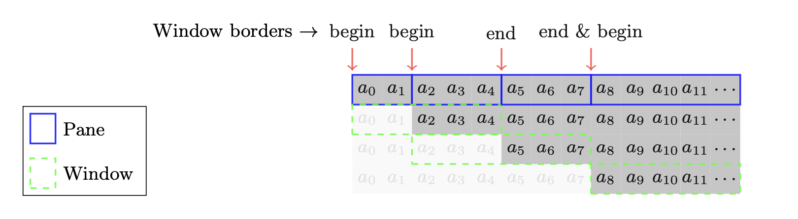
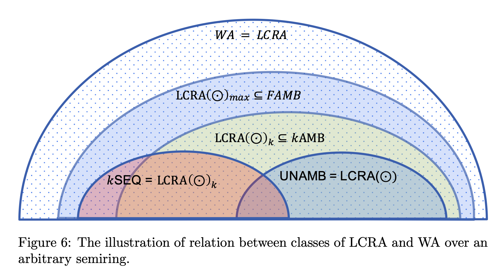

About me
Hi, I am PhD student at HKUST working with Amir Goharshady as my supervisor. I completed my masters from Chennai Mathematical Insitute in 2021. I enjoy reading about formal methods and their applications.
Research Interests
I am interested in program synthesis and verification. Click on a field below to know more about my interests and work in that field!
Specifying what one intends the program to do is much easier than actually implementing the program. Program synthesis involves automatically generating programs in a specific Domain Specific Language (DSL) that satisfies the given logical specifications.
I am particularly interested in synthesis of programs that manipulate data using polynomials, and using ML models to make the process of synthesis of such program practical for real-world use cases.
Representative work in this topic
We gave the algorithm to synthesize polynomial programs from the given logical specification using tools from Algebraic Geometry.
A. Goharshady, S. Hitarth, F. Mohammadi, H. Motwani, Algebro-geometric Algorithms for Template-based Synthesis of Polynomial Programs (OOPSLA'23)
Machine Learning models are being used to make key decision like detecting whether one has a certain disease or not. To train such ML models, the data of real people is used, and this raises the privacy concern.
Can one infer any private information about a certain person by accessing the machine learning model that was trained by using their data?
Membership Inference (MI) attack allows an adversary to decide whether a certain sample was used in training a given model. Various attacks and defences are proposed and it is a constant
I am interested in studying the reasons why certain MI attacks work, and how we can provide guarantees on leakage of ML models.
Representative work in this topic
We worked on understanding various factors of ML model that make it more susceptible to MI attacks, and how the state-of-art defences mitigate the privacy risks by targetting those factors.
T. Baluta, S. Hitarth, S. Shiqi, P. Saxena, S. Tople, Membership Inference Attacks and Generalization: A Causal Perspective (CCS'2022)
Blockchain is cryptographically linked list of records. It is also called immutable ledger. Various blockchain platforms like Ethereum, IBM Blockchain, Hyperledger Fabirc, etc, are being used to exploit and utilize the power of blockchains.
Smart Contracts are programs (digital contracts) stored on a blockchain that are executed when certain conditions are met. One of the interesting thing involved in executing a smart contract in Ethereum is the Gas usage, which is like the fee that one needs to pay to Ethereum for executing the smart contract. If one's smart contract needs more gas then they initially promised, then they lose their gas (read money) and the smart contract is terminated. Therefore, estimating the upper bound on gas usage for a given smart contract has been an active area of research.
Smart Contracts are programs (digital contracts) stored on a blockchain that are executed when certain conditions are met. One of the interesting thing involved in executing a smart contract in Ethereum is the Gas usage, which is like the fee that one needs to pay to Ethereum for executing the smart contract. If one's smart contract needs more gas then they initially promised, then they lose their gas (read money) and the smart contract is terminated. Therefore, estimating the upper bound on gas usage for a given smart contract has been an active area of research.
Representative work in this topic
The work is on getting better bounds on gas requirement for a wide class of smart contract by overapproximating them as polynomial programs.
Z. Cai, S. Farokhnia, A. Goharshady, S. Hitarth, Asparagus: Automated Synthesis of Parametric Gas Upper-bounds for Smart Contracts (Under Submission)
In processing streaming data like that from hospital intensive care units which continuously generate data, the algorithm that process such data are required to make decision and give relevant output based on data in a given window.
Traditional stream processor let the user define window using imperative programming language which lack formalism and rigor.
Traditional stream processor let the user define window using imperative programming language which lack formalism and rigor.

I am interested in formalizing the specification of windows using robust logics and studying various decision problems associated with the windowing of streams.
Representative work in this topic
We are working on formalizing the specification of windows using Monadic Second Order (MSO) logic and regular expressions.
S. Hitarth, M. Praveen, Window Expressions for Stream Data Processing (Work in Progress)
Automatons are abstract models of computations that move through states while reading an input and ultimately either accept or reject the input. At each state, one letter is read from the input, and depending upon the current configuration of the automaton, it moves to next state. The most powerful automata is Turing Machine.

The Turing Machine is so powerful model of computation, that nothing non-trivial can be decided about them (Rice Theorem). For example, we cannot decide whether the given turing machine will terminate its execution on given input, or will just keep running forever!
Therefore, we are usually interested in weaker model of computations like Weighted Automata, Cost Register Autamata, etc.
I am not currently working on this field, but I am interested in exploring the use of CRA in synthesis of certain type of programs in the near future.
Representation Work: My Master's Thesis, advised by Laure Daviaud, was on relating various classes of weighted automata based on ambiguity and various classes of CRA based on number of registers, etc.
S. Hitarth, On the relation between the classes of Weighted Automata and Cost Register Automata (2021)
Publications
Modern programmable blockchains have built-in support for smart contracts, i.e. programs that are stored
on the blockchain and whose state is subject to consensus. After a smart contract is deployed on the
blockchain, anyone on the network can interact with it and call its functions by creating transactions.
The blockchain protocol is then used to reach a consensus about the order of the transactions and, as a
direct corollary, the state of every smart contract. Reaching such consensus necessarily requires every node
on the network to execute all function calls. Thus, an attacker can perform DoS by creating expensive
transactions and function calls that use considerable or even possibly infinite time and space. To avoid
this, following Ethereum, virtually all programmable blockchains have introduced the concept of “gas”. A
fixed hard-coded gas cost is assigned to every atomic operation and the user who calls a function has to
pay for its total gas usage. This technique ensures that the protocol is not vulnerable to DoS attacks, but
it has also had significant unintended consequences. In Ethereum alone, out-of-gas errors, i.e. when a
user misunderestimates the gas usage of their function call and does not allocate enough gas, are a major
source of security vulnerabilities.
We focus on the well-studied problem of automatically finding upper-bounds on the gas usage of a smart
contract. This is a classical problem in the blockchain community and has also been extensively studied by
researchers in programming languages and verification. In this work, we provide a novel approach using
theorems from polyhedral geometry and real algebraic geometry, namely Farkas’ Lemma, Handelman’s
Theorem, and Putinar’s Positivstellensatz, to automatically synthesize linear and polynomial parametric
bounds for the gas usage of smart contracts. Our approach is the first to provide completeness guarantees
for the synthesis of such parametric upper-bounds. Moreover, our theoretical results are independent of
the underlying consensus protocol and can be applied to smart contracts written in any language and run
on any blockchain. As a proof of concept, we also provide a tool, called “Asparagus” that implements our
algorithms for Ethereum contracts written in Solidity. Finally, we provide extensive experimental results
over 24,188 real-world smart contracts that are currently deployed on the Ethereum blockchain. We
compare Asparagus against Gastap, which is the only previous tool that could provide parametric bounds,
and show that our method significantly outperforms it, both in terms of applicability and the tightness of
the resulting bounds. More specifically, our approach can handle 80.56% percent of the functions (126,269
out of 156,735) in comparison with GASTAP’s 58.62%. Additionally, even on the benchmarks where both
approaches successfully synthesize a bound, our bound is tighter in 97.85% of the cases.
Template-based synthesis, also known as sketching, is a localized approach to program synthesis in which the programmer provides not only a specification, but also a high-level ``sketch`` of the program. The sketch is basically a partial program that models the general intuition of the programmer, while leaving the low-level details as unimplemented ``holes``. The role of the synthesis engine is then to fill in these holes such that the completed program satisfies the desired specification. In this work, we focus on template-based synthesis of polynomial imperative programs with real variables, i.e.~imperative programs in which all expressions appearing in assignments, conditions and guards are polynomials over program variables. While this problem can be solved in a sound and complete manner by a reduction to the first-order theory of the reals, the resulting formulas will contain a quantifier alternation and are extremely hard for modern SMT solvers, even when considering toy programs with a handful of lines. Moreover, the classical algorithms for quantifier elimination are notoriously unscalable and not at all applicable to this use-case.
In contrast, our main contribution is an algorithm, based on several well-known theorems in polyhedral and real algebraic geometry, namely Putinar's Positivstellensatz, the Real Nullstellensatz, Handelman's Theorem and Farkas' Lemma, which sidesteps the quantifier elimination difficulty and reduces the problem directly to Quadratic Programming (QP). Alternatively, one can view our algorithm as an efficient way of eliminating quantifiers in the particular formulas that appear in the synthesis problem. The resulting QP instances can then be handled quite easily by SMT solvers. Notably, our reduction to QP is sound and semi-complete, i.e.~it is complete if polynomials of a sufficiently high degree are used in the templates. Thus, we provide the first method for sketching-based synthesis of polynomial programs that does not sacrifice completeness, while being scalable enough to handle meaningful programs. Finally, we provide experimental results over a variety of examples from the literature.
In contrast, our main contribution is an algorithm, based on several well-known theorems in polyhedral and real algebraic geometry, namely Putinar's Positivstellensatz, the Real Nullstellensatz, Handelman's Theorem and Farkas' Lemma, which sidesteps the quantifier elimination difficulty and reduces the problem directly to Quadratic Programming (QP). Alternatively, one can view our algorithm as an efficient way of eliminating quantifiers in the particular formulas that appear in the synthesis problem. The resulting QP instances can then be handled quite easily by SMT solvers. Notably, our reduction to QP is sound and semi-complete, i.e.~it is complete if polynomials of a sufficiently high degree are used in the templates. Thus, we provide the first method for sketching-based synthesis of polynomial programs that does not sacrifice completeness, while being scalable enough to handle meaningful programs. Finally, we provide experimental results over a variety of examples from the literature.
Abstract:
Membership inference (MI) attacks highlight a privacy weakness in present stochastic training methods for neural networks. It is not well understood, however, why they arise. Are they a natural consequence of imperfect generalization only? Which underlying causes should we address during training to mitigate these attacks? Towards answering such questions, we propose the first approach to explain MI attacks and their connection to generalization based on principled causal reasoning. We offer causal graphs that quanti- tatively explain the observed MI attack performance achieved for 6 attack variants. We refute several prior non-quantitative hypotheses that over-simplify or overestimate the influence of underlying causes, thereby failing to capture the complex interplay between several factors. Our causal models also show a new connection between generalization and MI attacks via their shared causal factors. Our causal models have high predictive power (0.90), i.e., their analytical predictions match with observations in unseen experiments often, which makes analysis via them a pragmatic alternative.
Traditional ways of storing and querying data do not work well in
scenarios where data is being generated continuously and quick
decisions need to be taken. E.g., in hospital intensive care units,
signals from multiple devices need to be monitored and occurrence of
any anomaly should raise alarms immediately. A typical design would
take the average from a window of say 10 seconds (time
based) or 10 successive (count based) readings and look for sudden
deviations. More sophisticated window definitions may be desired. E.g.,
we may want to select windows in which the maximum value of a field
is greater than a fixed threshold. Existing stream processing systems
either restrict to time or count based windows, or let users define
customised
windows in imperative programming languages. These are subject to
the implementers' interpretation of what is desired and hard to
understand
for others.
We introduce a formalism for specifying windows based on Monadic Second Order logic. It offers several advantages over adhoc definitions written in imperative languages. We demonstrate four such advantages. First, we illustrate how practical streaming data queries can be easily written with precise semantics. Second, we get different formalisms (but that are expressively equivalent) for defining windows. We use one of them (regular expressions) to design an end-user friendly language for defining windows. Third, we use another expressively equivalent formalism (automata) to design a processor that automatically generates windows according to specifications. The fourth advantage we demonstrate is more sophisticated. Some window definitions have the problem of too many windows overlapping with each other, overwhelming the processing engine. This is handled in different ways by different engines, but all the options are about what to do when this happens at runtime. We study this as a static analysis question and prove that it is undecidable to check whether such a scenario can ever arise for a given window definition. We identify a fragment for which the problem is decidable.
We introduce a formalism for specifying windows based on Monadic Second Order logic. It offers several advantages over adhoc definitions written in imperative languages. We demonstrate four such advantages. First, we illustrate how practical streaming data queries can be easily written with precise semantics. Second, we get different formalisms (but that are expressively equivalent) for defining windows. We use one of them (regular expressions) to design an end-user friendly language for defining windows. Third, we use another expressively equivalent formalism (automata) to design a processor that automatically generates windows according to specifications. The fourth advantage we demonstrate is more sophisticated. Some window definitions have the problem of too many windows overlapping with each other, overwhelming the processing engine. This is handled in different ways by different engines, but all the options are about what to do when this happens at runtime. We study this as a static analysis question and prove that it is undecidable to check whether such a scenario can ever arise for a given window definition. We identify a fragment for which the problem is decidable.
Weighted automata (WA) and linear cost register automata (LCRA) are two equivalent models of quantitative automata. LCRAs are deter- ministic finite-state automata with access to write-only registers that can be updated by combining other registers and constants using operations over a semiring. They give a different perspective for the class of functions computable by WA. For several natural classes of LCRA, we prove equiv- alence with well-known classes of WA, mostly by bounding the ambiguity of the latter.
Conference, Workshop, and Summer Schools
| When | What | Where |
|---|---|---|
| 22nd - 27th January, 2023 | IBM Neuro-Symbolic AI Workshop | Online Workshop |
| 5th - 11th December, 2022 | Winter School on Algorithms for Graphs and Games - 2022 | Indian Institute of Technology, Jodhpur |
| 12th - 24th September 2022 | AGATES: Introductory School & Workshop | University of Warsaw, Warsaw, Poland |
| 14th - 17th August 2022 | SAT/SMT/AR/CP Summer School (FLoC 2022) | Technion, Haifa, Israel |
| 7th - 11th August 2022 | CAV (FLoC 2022) | Technion, Haifa, Israel |
| 5th August 2022 | Mentoring Workshop Day 2 (FLoC 2022) | Technion, Haifa, Israel |
| 4th - 8th July 2022 | The Algorithmic and Enumerative Combinatorics 2022 | TU Wien, Vienna, Austria |
| 26th June - 2nd July 2022 | Swedish Summer School in Computer Science, 2022 | KTH, Stockholm, Sweden |
| 17th - 22nd January, 2021 | POPL 2021 (Symposium on Principles of Programming Languages) | Virtual Conference |
| 16th - 19th September, 2020 | Highlights of Logic, Games, and Automata 2020 | Virtual Conference |
Personal